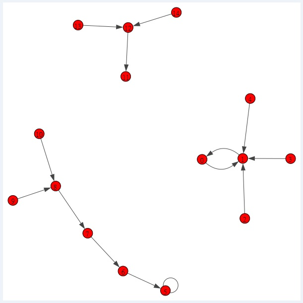

Boolean network attractors Landscape
Toy model
Below, we provide a toy model state transition graph. We use this toy model to demonstrate the intuitive method [1] for drawing the landscape of Boolean network. Here we explain an example how to estimate the probability distribution from trajectories in the state transition graph. Let us look at the trajectories to node 0.
There are 15 nodes in the Boolean network. Node 5 and node 11 are point attractors. Node 0 and node 1 forms a cyclic attractor.

Our intuitive method [1] generated 3D view of the Boolean network attractors landscape
Below, we provide a plot of the 3D Boolean network attractors landscape for the toy model. The 3D landscape plotted is consistent with the idea proposed by Waddington's epigenetic landscape where attractors are located at the bottom of the landscape for representing cell states.
Based on the state transition graph above we know node 11 is point attractor. Whereas node 0 and node 1 forms a cyclic attractor. Node 5 has a self loop and can be classified as
cyclic attractor as well.

References
1. Chong, K. H. An intuitive method to visualize Boolean network attractors landscape based on probability distribution from trajectories. bioRxiv 2024–10(2024).